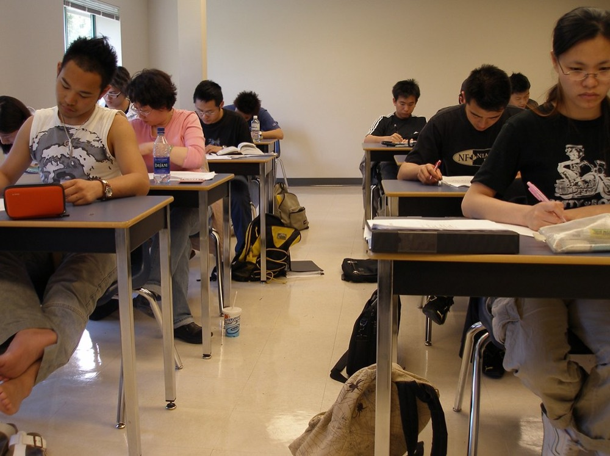

小学生
Arthur Gakuin
一人ひとりの「わかった」を、
一人ひとりの「わかった」を、
確かな「できた」へ。
長野県内5校舎の個別指導塾、アーサー学院。小学生から高校生まで、お子様の目標とペースに合わせた指導で、学ぶ楽しさと確かな学力を育てます。
5校舎（長野県内）
小・中・高 全学年対応
一人ひとりへの個別指導
四谷大塚NET 提携コース
Why Arthur
アーサー学院が選ばれる理由
「成績を上げる」だけでなく、自分で学ぶ力を育てる。アーサー学院が大切にしている4つの強みです。
01
Point 01
長野県内5校舎の地域密着
通いやすい近くの校舎で、地域に根ざした学びを続けられます。
信州中野・川中島・上田中央・上田原・本郷の5校舎を県内に展開し、お住まいや学校の近くから通える環境を整えています。地域の学校事情や定期テストの傾向を踏まえた指導で、一人ひとりの学習を身近に支えます。
02
Point 02
一人ひとりに合わせた完全個別指導
得意も苦手も、その子だけの学習プランで伸ばします。
全校舎・全コースで個別指導を採用し、理解度や目標、性格に合わせて学習内容と進度を組み立てます。集団では置いていかれがちなつまずきも、その場で確認しながら一歩ずつ解消。わからないところを残さない指導で、自分のペースで着実に力を伸ばせます。
03

Point 03
小・中・高をつなぐ一貫サポート
進学のたびに塾を探し直す必要がありません。
小学生・中学生・高校生のすべての学年に対応し、進学後も同じ方針で学習を見守れる一貫体制を用意。学年が上がっても積み上げてきた学習履歴や目標を引き継げるため、節目で学びが途切れる心配がありません。長いお付き合いの中で成長を継続して支えます。
04
Point 04
四谷大塚NET提携で受験にも対応
全国水準の教材と中学受験ノウハウを身近な校舎で。
四谷大塚NET提携コースを設け、中学受験を中心に全国基準の教材とカリキュラムで学べる環境を整えています。地域密着の個別指導と組み合わせることで、難関校をめざす学習にもきめ細かく対応。お子さまの目標に応じた最適な学びをご提案します。
コース紹介Course
中学生
高校生
受講料は学年・受講科目数・コースにより異なります。無料体験・資料請求の際に詳しくご案内します。
Results & Voice
学習の成果と、生徒・保護者の声
アーサー学院で学んだ生徒たちの歩みの一部です。
〔00〕点
定期テスト最高得点
〔000〕名
在籍生徒数
〔00〕%
志望校合格率
〔00〕点
入塾後の平均点アップ
定期テスト 数学 〔00〕点
苦手だった数学が得意科目に
個別指導で分からないところを一つずつ確認してもらえたのが良かったようです。家庭での学習習慣も少しずつ身についてきました。
〔◯◯中2年・保護者〕英語検定 〔◯〕級 合格
自分のペースで進められて安心
先生が一人ひとりに合わせて教えてくれるので、質問しやすかったです。検定対策も計画的に進めてもらえました。
〔◯◯中3年・本人〕定期テスト 5教科 〔000〕点
勉強への向き合い方が変わった
通い始めてから、自分から机に向かう時間が増えたように感じます。校舎が近く、通いやすいのもありがたいです。
〔◯◯中1年・保護者〕〔◯◯高校〕 合格
最後まで丁寧に支えてもらえた
受験直前まで、志望校に合わせた対策を続けてもらえました。面談で進路の相談にも親身に乗っていただき助かりました。
〔◯◯中3年・保護者〕小学算数 〔単元名〕克服
つまずきをそのままにせず
学校の進度に合わせて復習してもらえるので、苦手が積み重なる前に解消できました。四谷大塚NETの教材も活用しています。
〔◯◯小5年・保護者〕定期テスト 理科 〔00〕点UP
目標が立てやすくなった
一回ごとの授業で目標を決めて取り組めるので、勉強の見通しが持てるようになりました。質問しやすい雰囲気も気に入っています。
〔◯◯高校〕〔◯〕年・本人※ 上記の数値・体験談はすべて表示サンプルです。確定した実績・実際の声に差し替えます。
Flow
入塾までの流れ
お問い合わせから学習スタートまで、無理なく進めていただけます。
STEP 01
お問い合わせ・資料請求
お電話（0120-387-119）またはフォームから、無料体験や資料請求のご希望、ご不安に思っていることをお気軽にお寄せください。
STEP 02
学習相談・無料体験
お子さま一人ひとりの学年や目標、現在の学習状況をていねいにうかがったうえで、実際の授業の雰囲気を無料体験で確かめていただけます。
STEP 03
学習プランのご提案
ご相談と無料体験の内容をふまえ、お子さまに合ったコースや受講科目数、通う校舎などの学習プランをご提案いたします。
STEP 04
お申し込み
ご提案の内容にご納得いただけましたら、入塾のお申し込み手続きをご案内し、開始の日程を一緒に決めてまいります。
STEP 05
入塾・学習スタート
信州中野校・川中島校・上田中央校・上田原校・本郷校のいずれかで、個別指導による学習がスタートします。
FAQ
よくあるご質問
無料体験授業は、ホームページのお申し込みフォーム、またはお電話（フリーダイヤル 0120-387-119／受付時間〔00:00〜00:00 要確認〕）で承っております。体験授業の費用はかかりません。お子さまの学年や通われる校舎、ご希望の教科をお伝えいただければ、内容をご案内いたします。
授業料は、学年や受講される教科数、受講回数によって異なります。そのため一律の金額はご案内しておりません。お子さまの状況やご希望に合わせて最適なプランをご提案いたしますので、お問い合わせ、または無料体験授業の際に詳しくご案内いたします。
アーサー学院は、小学生・中学生・高校生のすべての学年で個別指導を行っております。一人ひとりの学習状況や目標に合わせて指導内容を組み立て、わからないところをそのままにしないサポートを大切にしています。中学受験を中心に四谷大塚NET提携コースもご用意しております。
学年や学期の途中からでもご入塾いただけます。個別指導のため、現在の学習状況やつまずいているところからスタートできます。入塾までの流れや手続きについては、お問い合わせいただくか、無料体験授業の際にあわせてご案内いたします。
教材につきましては、お子さまの学年や目標に合わせてご案内しております。学校の教科書・問題集の併用などのご希望は、お問い合わせ、または無料体験授業の際にご相談ください。一人ひとりに合わせた個別指導ですので、学習状況に応じた進め方をご提案いたします。
送迎や駐車場のご利用については、校舎ごとに状況が異なる場合がございます〔要確認〕。お通いを検討されている校舎について、お電話（フリーダイヤル 0120-387-119）でお問い合わせいただければ、詳しくご案内いたします。
News & SNS
お知らせ・最新情報
Campus
校舎案内
長野県内に5校舎。お近くの校舎で無料体験・ご相談を受け付けています。
Contact
まずは無料体験で、アーサー学院を体感してください
「うちの子に合うかな」という段階でも大丈夫です。授業の雰囲気や指導方針を、無料体験・ご相談で確かめていただけます。資料請求も無料です。